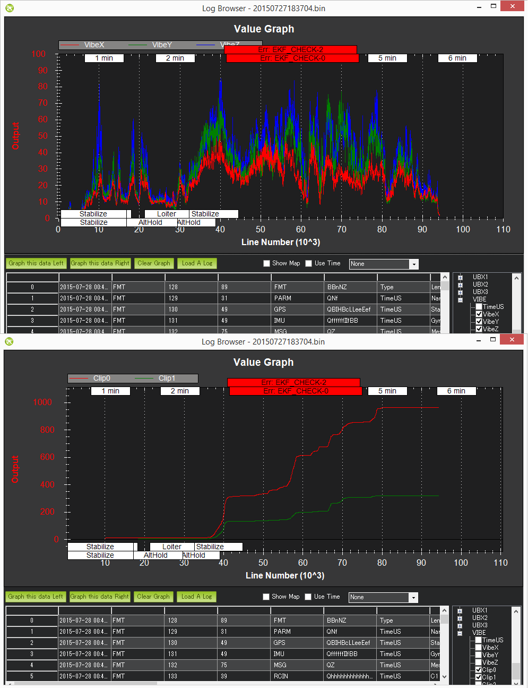
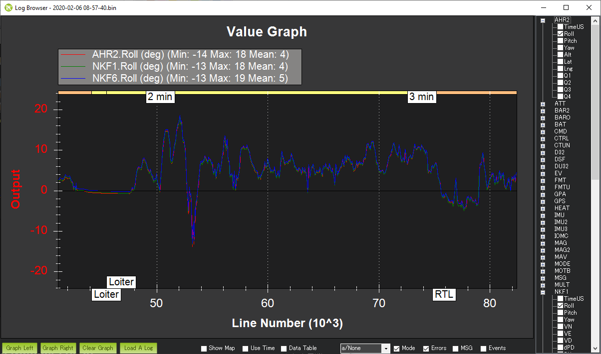

Measuring Vibration¶
Autopilots have accelerometers that are sensitive to vibrations. These accelerometer values are combined with barometer and GPS data to estimate the vehicle’s position. With excessive vibrations, the estimate can be thrown off and lead to very bad performance in modes that rely on accurate positioning (e.g. on Copter: AltHold, Loiter, RTL, Guided, Position and Auto flight modes).
These instructions explain how to measure the vibration levels. If you find they are out-of-tolerance then follow the advice found on the Vibration Damping page.
Real-Time view in Ground Station¶
Ground Stations can display a real-time view of vibration and clipping. If using the Mission Planner click on “Vibe” on the HUD to display the current vibration levels.

Vibration levels below 30m/s/s are normally acceptable. Levels above 30m/s/s may have problems and levels above 60m/s/s nearly always have problems with position or altitude hold.
Vibe Dataflash Log message¶
Check the recorded Vibe levels are mostly below 30m/s/s
Perform a regular flight (i.e. not just a gentle hover) of at least a few minutes and download the dataflash logs.
Using the Mission Planner or other ground station graph the VIBE message’s VibeX, VibeY and VibeZ values. These show the standard deviation of the primary accelerometer’s output in m/s/s. The image below, taken from a 3DR IRIS, shows normal levels which are below 15m/s/s but occasionally peak to 30m/s/s. Maximum acceptable values appear to be below 30m/s/s (see second picture below).
Graph the Clip0, Clip1 and Clip2 values which increase each time one of the accelerometers reaches its maximum limit (16G). Ideally these should be zero for the whole flight but low numbers (<100) are likely ok especially if they occur during hard landings. A regularly increasing number through the log indicates a serious vibration problem that should be fixed.

This is an example of a vehicle that had position estimate problems due to high vibrations.
{kind=link}
The algorithm for calculating the vibration levels can be seen in the AP_InertialSensor.cpp’s calc_vibration_and_clipping() method but in short it involves calculating the standard deviation of the accelerometer readings like this:
- Capture the raw x, y and z accelerometer values from the primary IMU
- High-pass filter the raw values at 5hz to remove the vehicle’s movement and create a “accel_vibe_floor” for x,y and z axis.
- Calculate the difference between the latest accel values and the accel_vibe_floor.
- Square the above differences, filter at 2hz and then calculate the square root (for x, y and z). These final three values are what appear in the VIBE msg’s VibeX, Y and Z fields.
Looking for “The Leans”¶
The Leans occurs when the vehicle’s attitude estimate becomes incorrect causing it to lean significantly even though the pilot is commanding level flight. The cause of the problem is often accelerometer aliasing which can be confirmed by comparing the Roll and Pitch attitude estimates from each of the estimation systems (i.e. each AHRSs or EKFs). The attitude estimates should be within a few degrees of each other
- Download the dataflash log and open in the ground station’s log viewer
- Compare the AHRS2.Roll, NKF1[0].Roll and NKF1[1].Roll
The image below shows a typical log in which the attitudes match well
{kind=link}
Advanced Analysis with FFT¶
Refer to the Measuring Vibration with IMU Batch Sampler page for instructions on how to collect large amounts of IMU data and perform an FFT analysis to determine the frequencies with the most vibration.
IMU Dataflash Log message¶
For very old versions of ArduPilot that do not include the Vibe message the IMU values can be checked directly
Ensure the LOG_BITMASK parameter is set to include IMU data so accelerometer values are recorded to the dataflash logs
Fly your copter in Stabilize mode and try to maintain a level hover (it doesn’t need to be perfectly stable or level)
Download the dataflash logs and after the download has completed, use the Mission Planner’s “Review a Log” button to open the latest file in the log directory (it’s last digit will be the Log number you downloaded so in the example above we downloaded Log #1 so the filename will end in 1.log)
When the Log Browser appears, scroll down until you find any IMU message. Click on the row’s AccX and push Graph this data Left button. Repeat for the AccY and AccZ columns to produce a graph like below.

Check the scale on the left and ensure that your vibration levels for the AccX and AccY are between -3 and +3. For AccZ the acceptable range is -15 to -5. If it is very close or over these limits you should refer back to the Vibration Damping page for possible solutions.
After all the above is complete, go to the Mission Planner’s standard parameters page (you may need to press the Connect button again) and set the Log Bitmask back to “Default”. This is important because especially on the APM logging requires significant CPU resources and it’s a waste to log these if they’re not really needed.